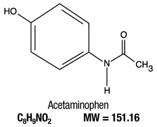

Acetaminophen is also called paracetamol, derived from acetyl-para-aminophenol, or APAP. The chemical formula for Acetaminophen is C8H9NO2
Acetaminophen is formed by P-Aminophenol, which is a nitration of phenol followed by reduction with iron, and Nitrobenzene, a combination of sulfuric acid, water, and nitric acid.

Acetyl-para-aminophenol - One of the major ingredients in Acetaminophen
APAP - Acetyl-Para-AminoPhenol
P-Aminophenol - One of the main ingredients in Acetaminophen
Nitration - Introduction of a nitro group into an organic compound
Reduction - Gaining of an electron by one of the reactants in a chemical reaction